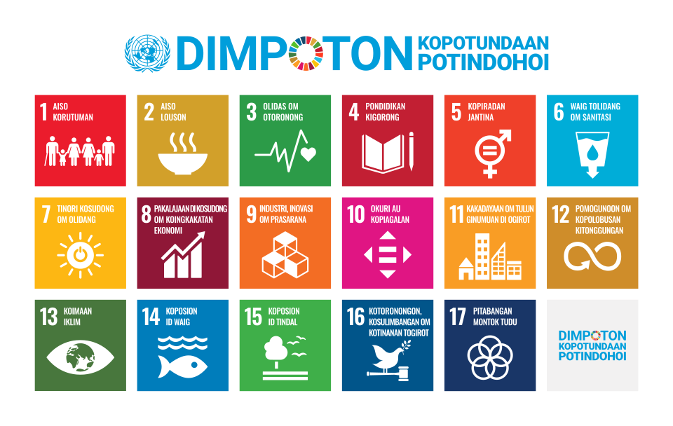

Desafios do Desenvolvimento Sustentável - ODS
Tecnologia e IA
por: Nilo César Reichembach
Pesquisa realizada para o componetne de pensamento computacional.
Em setembro de 2015, foram criados os chamados ODS.Sigla para
Objetivos de Desenvolvimento Sustentáveis. Esses objetivos, foram
criados pela ONU, na cúpula de Nova York.
Esses objetivos, foram criados como métricas para os países que
fazem parte da ONU. Eles foram criados para que todos os países que compõem a
a ONU sigam e tentem desenvolve-los.
Nos ODS temos vários objetivos citados, na verdade temos 17, aos quais vamos
listar agora:
- 1 - Erradicacão da probreza: Acabar com a pobreza em todas as suas formas.
- 2 - Fome zero e agricultura Sustentável: Promover a segurança alimentar,
melhorar a nutrição e fomentar a agricultura sustentável.
- 3 - Saúde e bem-estar: Garantir uma vida saudável e promover o bem-estar
para todos em todas as idades.
- 4 - Educação da Qualidade: Assegurar uma educação inclusiva,
equitativa e de qualidade.
- 5 - Igualdade de gênero: Garantia que todas as pessoas tenhma segurança,
inclusive os LGBTQI+.
- 6 - Trabalho descente: Que todos possam trabalham em condições dignas.
- 7 - Indústria e inovação:
- 8 - Redução das desigualdades:
- 9 - Consumo e Produçaõ responsável:
- 10 - Água potável e Saneamento:
- 11 - Energia Limpa e sustentável.
- 12 - Ações contra mudança do Clima.
- 13 - Vida e água
- 14 - Vida Terrestre:
- 15 - Cidades e comunidades:
- 16 - Paz e justiça.
- 17 - Parcerias para objetivos.